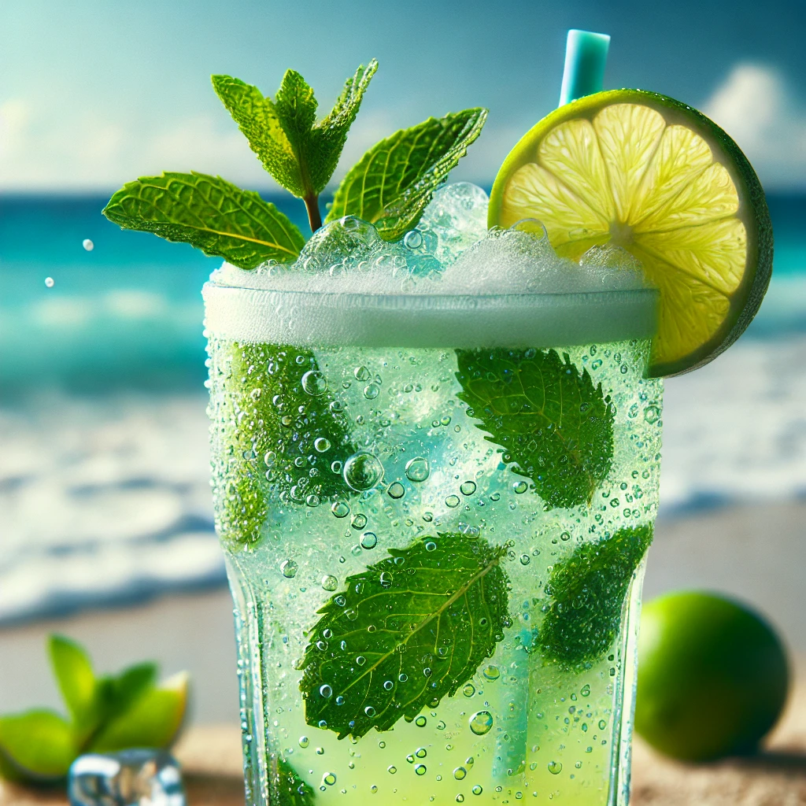

THE BUSTY MERMAID

Ocean Breeze Mojito
Ingredienser og Oppskrift:
Velkommen til **Ocean Breeze Mojito**, en drink som minner om den friske sjøbrisen som danser gjennom palmetrærne på en tropisk øy. Denne mojitoen er både forfriskende og livlig, perfekt for de som ønsker å nyte smakene av havet og sommeren i hver eneste slurk.
Så, hva er hemmeligheten bak denne forfriskende drinken? Her er oppskriften på å lage din egen mojito med et snev av havvind:
- 1 del **hvit rom** (for den friske, tropiske smaken)
- 1 del **limejuice** (for den syrlige, forfriskende effekten)
- 1 ts **sukker** (for den søte smaken som balanserer limejuicen)
- Friske **mynteblader** (for en frisk og aromatisk smak)
- Club soda (for å gi drinken et sprudlende og forfriskende løft)
Hvordan lage denne drinken:
- Start med å muddle (knuse) myntebladene og sukkeret i et glass for å frigjøre smakene.
- Tilsett rom, limejuice og is i glasset, og rør godt for å blande ingrediensene.
- Fyll glasset med club soda og rør igjen.
- Pynt med et mynteblad på toppen og nyt smaken av den kjølige havbrisen!
OBS: Denne drinken har en tendens til å gi en frisk og energigivende effekt – vær forberedt på å føle deg som en ekte sjøfarer på vei til et tropisk paradis!